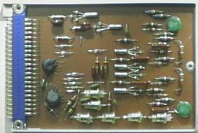
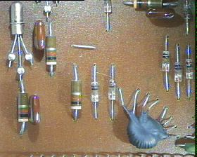
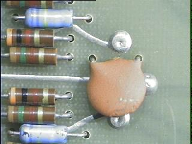

The initial product of DEC was not computers, but a line of modular digital building blocks called system modules. With standardized power supplies, logic levels, and pulse lengths, system modules provided a relatively painless way to construct digital systems at a time when it was considered normal to roll your own in terms of gate design.
Only later did DEC assemble system modules into computer systems -- and even then, it was considered impossible for such a small company to compete with IBM, and Univac. Hence, the machines were called "Programmed Data Processors" rather than computers -- hence the PDP acronym. Here are some pictures and early brochures on the DEC system modules:


The DEC 1201 flip flop system module is a good example of an early design. Note the robust Amphenol blue ribbon connector, tied to the PC board with soldered solid wires. This connector and its attachment was a major source of reliability in the DEC system module series. Early PC board technology was incapable of making card edge connectors of any reliability.
Note the large "top hat" diodes used to generate the -3 volt clamp power supply locally from the -15 volt supply. The pulse transformers were encapsulated in these early design, and hidden in little red or orange domed housings in later models.
The PC board here is single sided phenolic (brown) -- later to be replaced with double sided fiberglass (light green). The PC technology of the day was incapable of making reliable plated through holes, even in two layer boards. DEC used wire jumpers in the single sided boards, and rivets soldered on top and bottom for the double sided feedthroughs. Cold solder joints in the rivets was a major source of reliability problems in the double sided boards.

The rivets in the 6205 single bit register slice of the 166 processor.